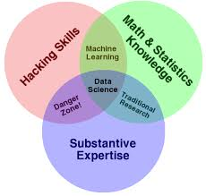
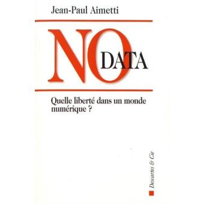
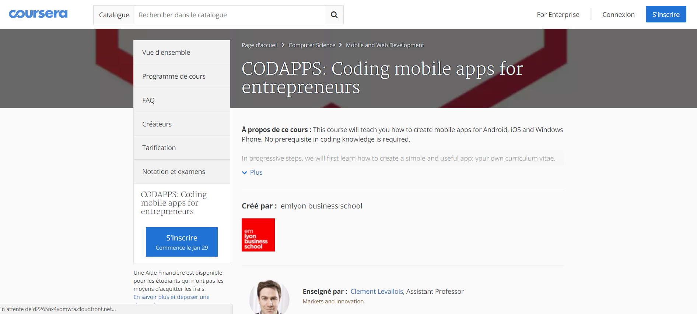

emlyon business school
Former les Talents d’aujourd’hui à l’intelligence artificielle de demain
last modified: 2018-01-21
'Escape' or 'o' to see all sides, F11 for full screen, 's' for speaker notes
1. Comprendre ce qu’est l’intelligence artificielle
a. Intelligence artificielle forte vs Intelligence artificielle faible
Les robots sont encore loins d’être une techno pertinente pour l’économie:
Mais en êtes-vous si sûr?
Les robots sont impressionnants, et évoquent une intelligence artificielle menaçante:

En fait, ces robots d’Hollywood represéntent l' intelligence artificielle forte:
Une intelligence qui a conscience d’elle-même.
Tous les experts s’accordent pour dire que cette intelligence n’existe pas et n’existera pas avant plusieurs dizaines d’années.
L’enjeu pour les jeunes voulant se former aujourd’hui et de connaître ce qu’est l' intelligence artificielle faible.
Qu’est-ce que cette intelligence artificielle faible?
L’intelligence artificielle faible est celle qui:
est capable de meilleures performances que l’humain
sur des tâches complexes
très clairement définies
et sur un périmètre précis
(faible ne veut donc pas dire "nulle" ou "mauvaise"!)
Exemples:
IBM Watson bat les meilleurs joueurs de Jeopardy!
Les entrepôts d’Amazon en 2013:
Les mêmes entrepôts d’Amazon en 2016:
b. De quoi est faite l’intelligence artificielle faible?
Aujourd’hui, l’intelligence artificielle faible est synonyme de data science.
La data science consiste à:
analyser des jeux de données riches et en grand volume
en appliquant des techniques statistiques avancées
qui demandent à être déployées sous forme de code informatique - algorithmes mais pas seulement
dans le but de répondre à une problématique métier (optimiser, prédire, suggérer, matcher, catégoriser…)
Une famille de techniques statistiques populaires en data science s’appelle le machine learning, elle-même composée de sous-familles appelées unsupervised learning, supervised learning, reinforcement learning…
Mais pour rester sur un niveau plus général, ce graphique représente la data science de façon très utile:

J’attire votre attention sur le cercle "substantive expertise", qui peut se traduire par "compétence métier". On ne fait pas de data science, ou d’intelligence artificielle, sans expertise du secteur dans lequel on applique les techniques de data science.
Comment se forme-t-on aux compétences représentées dans ce graphique?
2. Comment se former à l’intelligence artificielle?
Plusieurs options s’offrent à la génération qui va grandir avec l’IA:
découvrir l’IA en tant que citoyen(ne) du monde
comprendre l’IA dans son cadre professionnel
faire de l’IA son coeur de métier
Ces trois types de rapport à l’IA justifient des formations différentes.
a. un rapport de citoyen(ne) à l’IA:
On peut bien s’intéresser à l’IA sans que cela soit un enjeu professionel immédiat.
C’est important pour exercer son jugement de citoyen(ne), pour sa curiosité scientifique. L’IA pose des questions majeures de société que l’on se doit d’appréhender:
puisque la data science s’exerce sur les données, quelle protection pour les données privées?
les algorithmes des data scientists n’ont-ils pas des effets pervers? des usages néfastes?
et ce n’est pas que anxiogène! On peut également s’intéresser aux avantages de l’IA :-)
Dans cette démarche, ma recommendation serait de lire des ouvrages de références, regarder des vidéos de qualité, participer aux nombreuses conférences qui existent sur le sujet, voire apprendre à coder soi même par curiosité.
En français par exemple, un ouvrage très bien fait et que je recommande est celui de Jean-Paul Aimetti:

En introduction au sujet, et pour mieux réaliser les enjeux sociétaux et économiques de l’IA, je recommanderai également cette vidéo de Laurent Alexandre, qui est intervenu devant une Commission du Sénat en 2017:
b. Faire de l’IA / la data science sont coeur de métier
Je vais passer rapidement sur ce point car il est simple:
Les écoles d’ingénieur ayant pris le virage de la data science sont la voie simple et efficace si l’on veut devenir data scientist.
Quelques précisions cependant:
beaucoup d’écoles d’ingénieur sont juste en train de prendre ce virage, certaines sont un peu en retard.
Un bon moyen pour vérifier qu’un cursus aborde effectivement la data science de la bonne façon est qu’il inclut l’apprentissage du machine learning avec python, qui est le langage de programmation de référence dans ce domaine.
il existe un certain nombre de formations en ligne d’excellente qualité, en anglais, gratuites sous forme de MOOC.
→ Allez voir "Intro to data science" sur Coursera et Udacity.
c. Utiliser / être complémentaire de l’IA dans son métier
Je pense que cette voie est essentielle.
Il est crucial que les générations se formant à un métier aujourd’hui maîtrisent les enjeux de l’IA pour travailler avec elle, plutôt que de se faire remplacer ou être relégué à des tâches d’éxecution dépourvues d’intérêt.
Pour cela, il faut:
apprendre à coder
suivre des cours de data science (introduction ou avancé) dans son cursus ou en parallèle
faire, créer, développer des projets concrets
être dans une démarche de formation continue: les techniques évoluent rapidement, on est vite dépassé.
Apprendre à coder: c’est moins dur qu’on peut le croire:
A emlyon business school, dans le programme grande école, nous faisons découvrir à tous nos étudiants la programation en créant une application mobile.
Ce cours est d’ailleurs également sur la plateforme de MOOC Coursera:

Suivre des cours de data science: ils sont plus difficiles à trouver
A ma connaissance, peu voire pas d’écoles ou d’universités proposent des cours de data science au sein de leurs cursus disciplinaires.
(une licence de sociologie ne propose pas de data science)
Solutions:
faire un double diplôme
faire une licence dans un domaine, puis suivre un Master en data science (emlyon en lance un à Paris)
intégrer une des rares écoles qui allie formation professionnelle et data science (indice: emlyon!)
emlyon propose dans son programme grande école, en bba, en Msc, des cours de data science.
Trois liens:
cours de data science à emlyon: http://data.em-lyon.com/teaching-2
Msc in Digital Marketing and Data Science à Paris en Sept 2018: http://graduate.em-lyon.com/en/MSc-in-Digital-Marketing-Data-Science
cours sur l’Internet des objets au BBA emlyon de St Etienne: http://seinecle.github.io/IoT4Entrepreneurs
Faire, aller sur le terrain
L’intelligence artificielle et la data science ont des composantes technologiques essentielles: on n’apprend pas simplement un savoir matématique ou statistique théorique.
On code, on installe des programmes sur des ordinateurs et des serveurs, on connecte des objets, on créé des pages web…
(et quoi qu’il arrive on apprenant mieux en faisant, j’en ai la conviction)
Il faut donc chercher autant que possible des formations qui font travailler les participants en projets, avec des réalistions concrètes et visibles (ce qu’ils pourront mentionner dans leur CV, d’ailleurs).
Encore une fois avec sa pédagogie "early makers", emlyon a des formations qui répondent à ce besoin:
Un exemple de devoir rendu dans mon cours sur l’internet des objets dans le BBA emlyon, campus de St-Etienne:
Le cours était d’ailleurs lui-même en vidéo:
Et tous les programmes de emlyon, sur tous les capus de Lyon, Paris, Saint-Etienne, ont accès aux formations du Makers Lab:
C’est la fin de cette présentation!
Je reste à votre disposition pour des questions, également par email à levallois@em-lyon.com
Merci!
This presentation is designed by Clement Levallois.
Discover my other courses in data / tech for business: http://www.clementlevallois.net
Or get in touch via Twitter: @seinecle